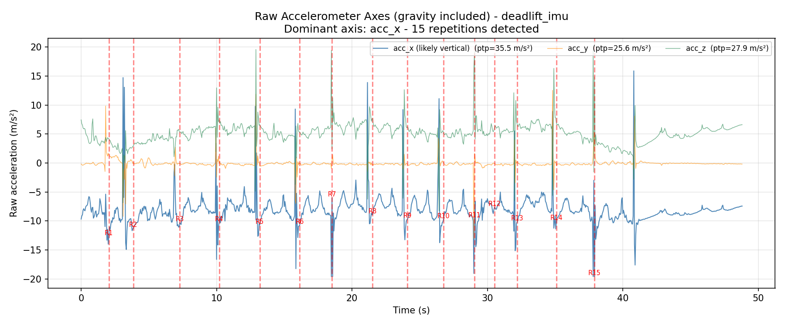
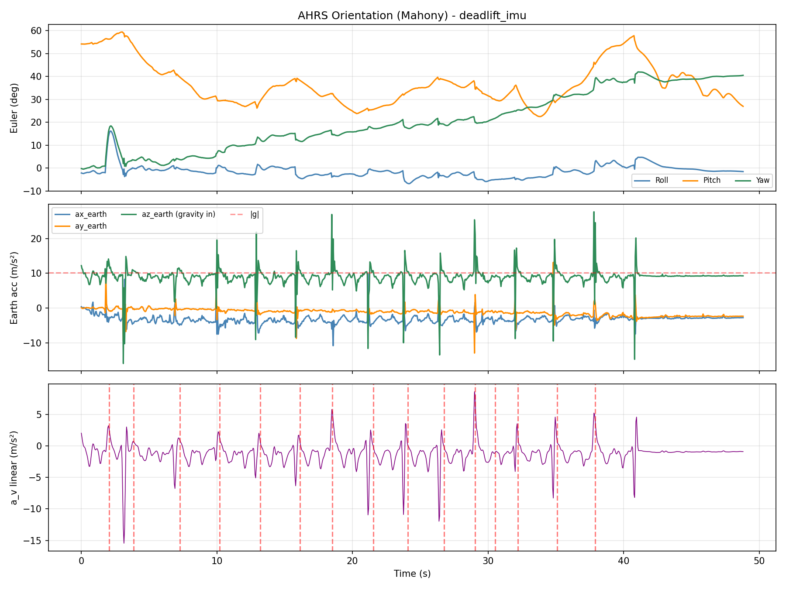
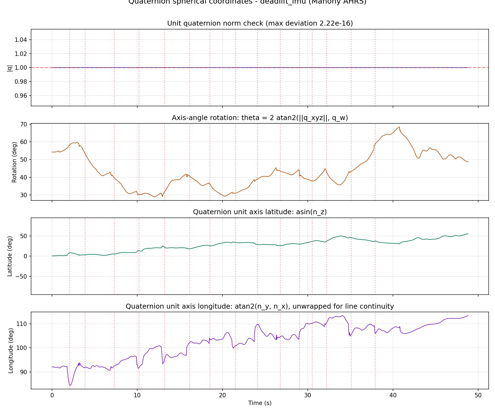
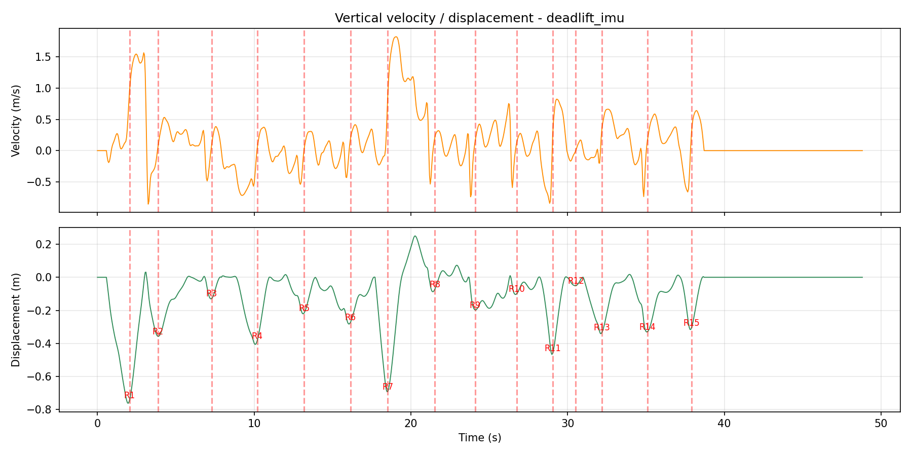
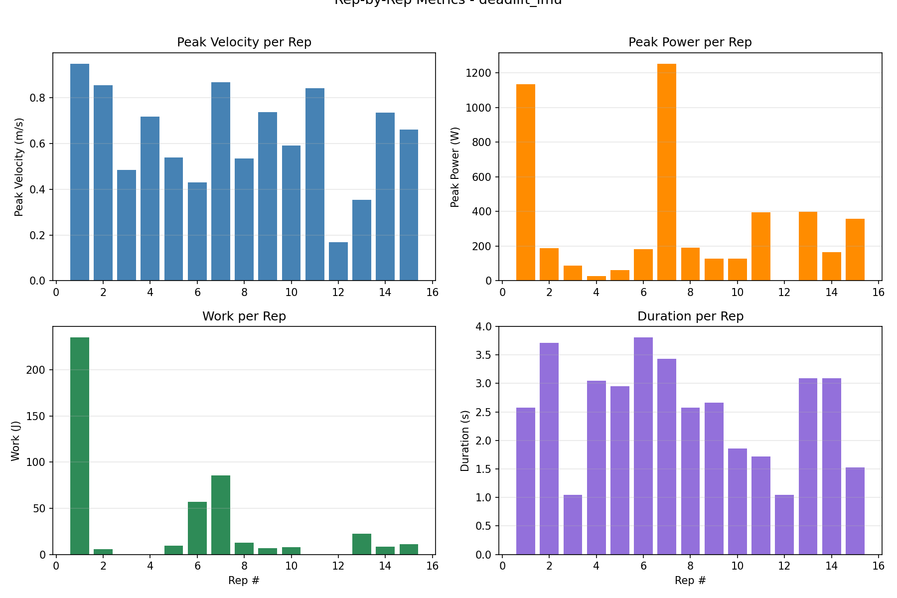
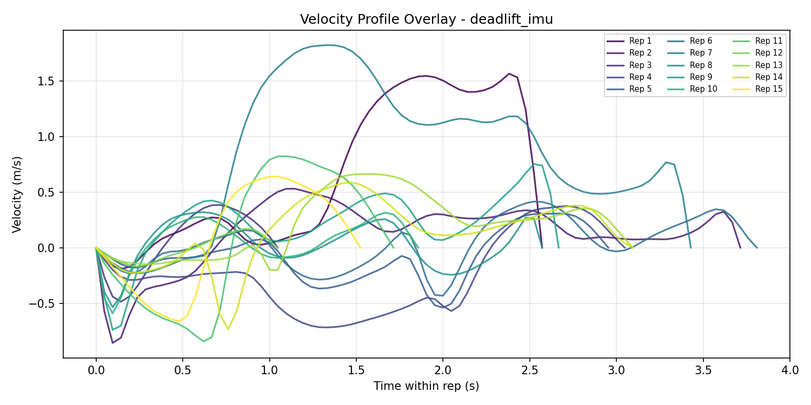

File: deadlift_imu
Date: 2026-06-09 14:50:59
Filter: Mahony AHRS | Sample rate: 21.0 Hz | |g| (sensor): 10.155 m/s²
Barbell weight: 20.0 kg | Body mass: 75.0 kg | Body height: 1.77 m
| Rep | Duration (s) | Conc. (s) | Ecc. (s) | Peak Vel (m/s) | Mean Vel (m/s) | Peak Power (W) | Mean Power (W) | Work (J) | ROM (m) | Peak Force (N) | Impulse (N·s) |
|---|---|---|---|---|---|---|---|---|---|---|---|
| 1 | 2.57 | 1.48 | 1.10 | 0.950 | 0.218 | 1136.3 | 220.9 | 235.27 | 0.794 | 1239.2 | 1279.61 |
| 2 | 3.71 | 0.71 | 3.00 | 0.856 | 0.052 | 187.8 | 120.0 | 5.71 | 0.363 | 1220.9 | 553.36 |
| 3 | 1.05 | 0.43 | 0.62 | 0.486 | 0.088 | 88.4 | 88.4 | 0.00 | 0.133 | 1054.5 | 344.53 |
| 4 | 3.05 | 2.29 | 0.76 | 0.717 | 0.025 | 27.2 | 27.2 | 0.00 | 0.414 | 1148.4 | 1903.52 |
| 5 | 2.95 | 2.24 | 0.71 | 0.540 | 0.043 | 61.5 | 36.3 | 9.56 | 0.237 | 1126.4 | 1781.29 |
| 6 | 3.81 | 2.24 | 1.57 | 0.431 | 0.101 | 181.6 | 86.0 | 56.84 | 0.285 | 1097.0 | 1774.03 |
| 7 | 3.43 | 0.81 | 2.62 | 0.869 | 0.425 | 1254.0 | 608.8 | 85.71 | 0.942 | 1484.9 | 745.84 |
| 8 | 2.57 | 0.38 | 2.19 | 0.535 | 0.126 | 192.3 | 90.6 | 12.64 | 0.160 | 1174.7 | 294.81 |
| 9 | 2.67 | 0.38 | 2.29 | 0.739 | 0.097 | 129.3 | 76.0 | 6.71 | 0.208 | 1271.5 | 289.74 |
| 10 | 1.86 | 0.38 | 1.48 | 0.591 | 0.108 | 129.1 | 85.3 | 7.78 | 0.106 | 1177.5 | 284.94 |
| 11 | 1.71 | 0.81 | 0.90 | 0.843 | 0.234 | 395.7 | 395.7 | 0.00 | 0.470 | 1753.8 | 747.67 |
| 12 | 1.05 | 0.57 | 0.48 | 0.168 | 0.000 | 0.1 | 0.1 | 0.00 | 0.051 | 846.5 | 442.57 |
| 13 | 3.10 | 1.19 | 1.90 | 0.355 | 0.194 | 397.7 | 226.2 | 22.38 | 0.358 | 1268.7 | 1005.28 |
| 14 | 3.10 | 1.00 | 2.10 | 0.735 | 0.090 | 164.9 | 91.7 | 8.33 | 0.344 | 1369.9 | 820.04 |
| 15 | 1.52 | 0.71 | 0.81 | 0.662 | 0.174 | 358.1 | 230.5 | 10.98 | 0.320 | 1430.6 | 659.21 |
| Metric | Max | Min | Range | Mean | Std | CV% | Best Rep | Worst Rep |
|---|---|---|---|---|---|---|---|---|
| Peak Velocity (m/s) | 0.950 | 0.168 | 0.782 | 0.632 | 0.216 | 34.3% | #1 | #12 |
| Mean Velocity (m/s) | 0.425 | 0.000 | 0.425 | 0.132 | 0.106 | 80.8% | #7 | #12 |
| Peak Power (W) | 1253.987 | 0.143 | 1253.844 | 313.612 | 378.864 | 120.8% | #7 | #12 |
| Mean Power (W) | 608.776 | 0.143 | 608.634 | 158.928 | 160.974 | 101.3% | #7 | #12 |
| Work (J) | 235.271 | 0.000 | 235.271 | 30.795 | 61.404 | 199.4% | #1 | #3 |
| ROM (m) | 0.942 | 0.051 | 0.891 | 0.346 | 0.244 | 70.7% | #7 | #12 |
| Duration (s) | 3.810 | 1.048 | 2.762 | 2.543 | 0.905 | 35.6% | #6 | #3 |
| Concentric (s) | 2.286 | 0.381 | 1.905 | 1.041 | 0.700 | 67.2% | #4 | #8 |
| Eccentric (s) | 3.000 | 0.476 | 2.524 | 1.502 | 0.806 | 53.7% | #2 | #12 |
| Peak Force (N) | 1753.824 | 846.538 | 907.286 | 1244.301 | 210.141 | 16.9% | #11 | #12 |
| Impulse (N·s) | 1903.523 | 284.937 | 1618.586 | 861.764 | 569.911 | 66.1% | #4 | #10 |






The report now visualizes the unit quaternion as a rigid-body rotation:
q = [w, x, y, z] = [cos(theta/2), nx sin(theta/2),
ny sin(theta/2), nz sin(theta/2)], where
n is the unit rotation axis. Because |q| = 1, the
axis can be represented on the unit sphere with:
theta, the rigid-body rotation angle in degrees;asin(nz) in degrees;atan2(ny, nx) in degrees.The spherical line graph shows these three values through time. The embedded
3D animation is the main rigid-body view: the real-world Cartesian axes stay fixed
(Xe, Ye, Ze), the cube center translates by the AHRS/ZUPT vertical displacement,
the sensor cube and body axes (Xb, Yb, Zb) rotate by q(t), and the black
vector draws the unit quaternion axis n(q).
Unlike Euler angles, quaternions are singularity-free: no gimbal lock, no axis-order
ambiguity, and no discontinuous roll/pitch/yaw interpretation. The code still makes
q sign-continuous for display because q and -q
are the same physical orientation.
This report was produced by the vailá IMU Deadlift
AHRS pipeline (vaila_deadlift_imu.py). The orientation
tracking is a direct Python port of the open-source x-io Technologies
AHRS C reference. Method credits:
The vendored C reference used to validate the port lives under
tests/Deadlift/madgwick_algorithm_c/
(MadgwickAHRS/ and MahonyAHRS/).
Modern biomechanics is grounded in solid physical–mathematical foundations for modeling human movement. I leave here my profound tribute and final farewell to one of the greatest exponents of this scientific rigor in Brazil, Professor René Jean Brenzikofer (UNICAMP). It is an honor to have known him and to have shared creative ideas that demonstrated a biomechanics that truly makes a difference. I express my most sincere posthumous gratitude to his memory, celebrating his intellectual generosity and the privilege of his academic companionship. This close collaboration enabled the first publication of three-dimensional modeling data based on Quaternions in the book "Modelos Matemáticos nas Ciências Não-Exatas" (Editora Blucher, 2007).
Today, Quaternions are an indispensable technological reality. This four-dimensional algebra solves the mathematical singularity known as gimbal lock, and is the exact basis for the data-fusion algorithms in Inertial Measurement Units (IMUs) embedded in wearable devices (such as smartwatches and GPS units with IMUs attached to soccer players) for real-time motion analysis. They are also the absolute computational standard for kinematic computation in 3D animation and game physics engines — the very mathematics that powers the AHRS fusion used in this report.
The impact and importance of Prof. René on my scientific trajectory are historically recorded in the very structure of this research. In the acknowledgments section of my doctoral thesis his name was expressly written in recognition of the support and inspiration that were fundamental to consolidating this method in the country. May Professor René's legacy of dedication to science inspire the academic trajectory of all of you.
Primary references (BibTeX-ready):
Tribute & social-media coverage:
@book{nogueira2007modelos,
title = {Modelos matem\'aticos nas ci\^encias n\~ao-exatas - vol. 1},
author = {Nogueira, Eduardo Arantes and Martins, Luiz Eduardo Barreto
and Brenzikofer, Ren\'e},
year = {2007},
publisher = {Editora Blucher},
isbn = {9788521204190},
url = {https://www.blucher.com.br/modelos-matematicos-nas-ciencias-nao-exatas-vol-1_9788521204190}
}
@phdthesis{santiago2009rotaccoes,
title = {Rota\c{c}\~oes tridimensionais em biomec\^anica via quat\'ernions:
aplica\c{c}\~oes na an\'alise dos movimentos esportivos},
author = {Santiago, Paulo Roberto Pereira},
school = {Universidade Estadual Paulista (Unesp),
Instituto de Bioci\^encias de Rio Claro},
year = {2009},
url = {http://hdl.handle.net/11449/100404}
}
— Prof. Paulo R. P. Santiago